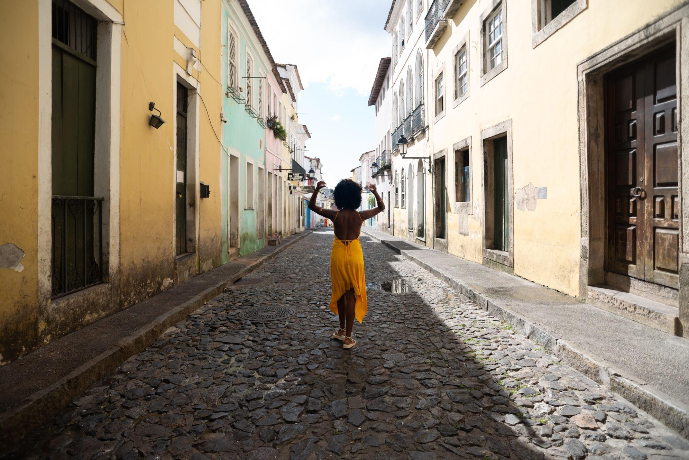
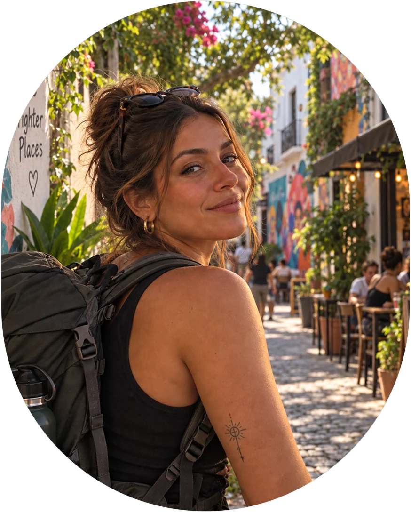
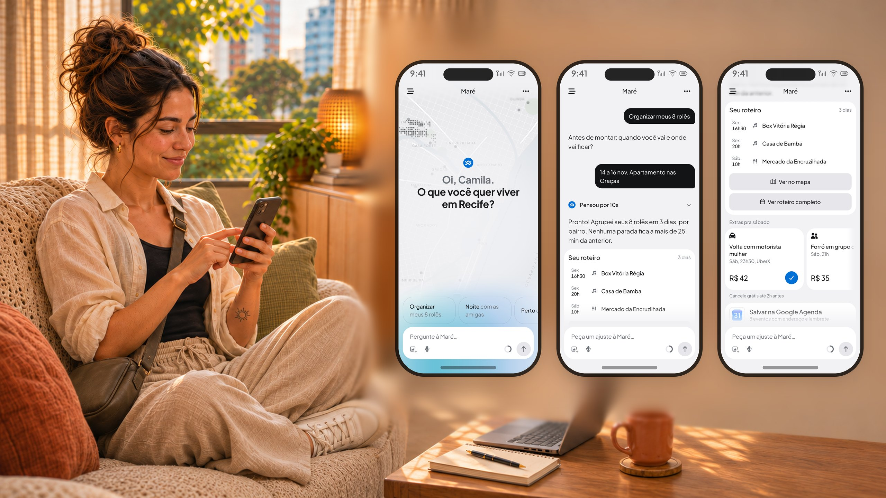
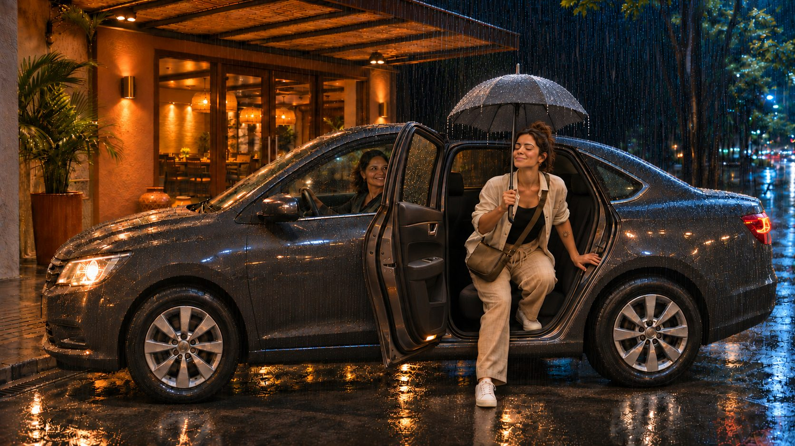

Será que é tranquilo ir sozinha?
E se meus planos mudarem?
E se eu tiver perdendo algum rolê?
Nem toda mulher que viaja sozinha se sente livre para experimentar o novo.
A incerteza de estar em um ambiente desconhecido.
A ausência de recomendações sensíveis à experiência feminina.
A dificuldade de acessar a cidade para além do circuito turístico.
E se sentir-se mais segura não significasse abrir mão da espontaneidade?
E se a liberdade de explorar fosse construída coletivamente?
Apresentamos
é um serviço de descoberta de rolês locais,
para ajudar mulheres que viajam sozinhas ou com mais uma pessoa
a explorar a cidade além do circuito turístico com confiança,
através de recomendações de quem mora lá, com curadoria e informação de segurança.
das viagens dos brasileiros são dentro do país (IBGE, 2024)
Técnicas
- 01Desk research
- 02Análise de concorrentes
- 03Entrevistas semiestruturadas
- 04Matriz CSD
- 05Personas
- 06Mapa de jornada
- 07Mapa do sistema
- 08Blueprint de serviço
- 09Fluxos de tela
- 10Storyboard
- 11Protótipo navegável
Ferramentas
- Claude Codedocumentação, diagramas e protótipo
- Flutterprotótipo navegável
- Vercelpublicação do protótipo e do pitch
- GitHubversionamento
- Magnificvídeos de textura do pitch
Mapa do sistema
- Informação
- Financeiro
- Material
Blueprint

Vamos acompanhar Camila em uma viagem para Recife.
Camila 28 anos
Prefere viajar sozinha.
Gosta de conhecer a cidade de maneira mais próxima da rotina local
e ter autonomia para decidir horários e roteiro, sentindo que tem as informações necessárias e suficientes.


Camila vai passar três dias em Recife. Procura um planejador de viagens e encontra a Coral na busca.
Sem criar conta, ela explora rolês indicados por quem mora na cidade.
Cada rolê diz quem indicou e por quê. O Box Vitória Régia é indicação da Joana, que mora em Casa Forte há 9 anos.
Antes de decidir, ela confere o melhor horário, quanto custa, os vídeos curtos e o selo de rolê seguro.
Para salvar, cria a conta. Os rolês vão para a pasta da viagem.
A Maré organiza os 8 rolês salvos em 3 dias, por bairro, e sugere a volta com motorista mulher.
Na sexta, chove. A Maré avisa e troca o rolê ao ar livre por um coberto, no mesmo bairro, com ida e volta de motorista mulher.
Ela chega ao Parraxaxá com uma motorista parceira.
O plano mudou, a noite continua: comida pernambucana enquanto a chuva passa.
De volta ao apartamento, avalia o rolê em dois toques. A avaliação dela ajuda outras mulheres a decidir.
Viaje segura. Experimente o novo
Acesse a plataforma